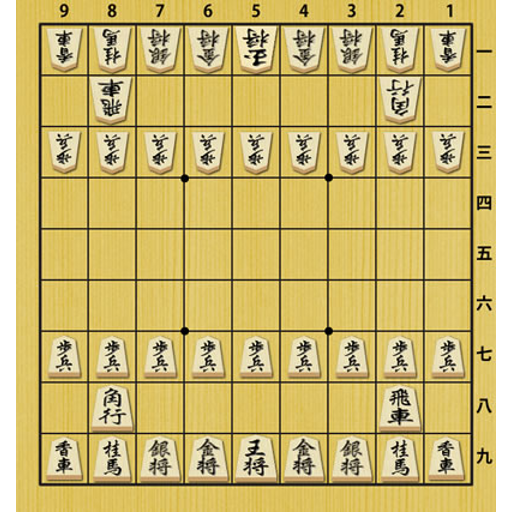
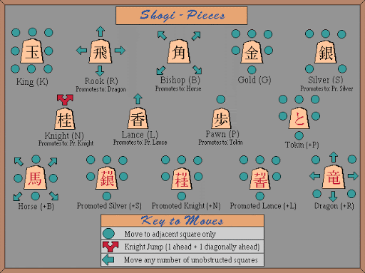
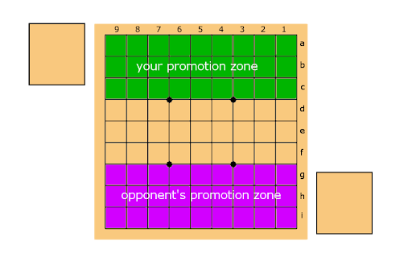

Introduction:
-Shogi is a Japanese board game played by two players. The object of the game is to capture the opponent's King. Shogi is played on a nine-by-nine board. The vertical rows are called files, the horizontal ones ranks or just rows. Each player has twenty pieces: one King, two Gold Generals, two Silver Generals, two kNights, two Lances, one Rook, one Bishop and nine Pawns. The player moving up the board and making the first move is referred to as black and his opponent white, although in Shogi sets all pieces have the same colour. They are differentiated only in direction: pieces pointing away from a player are his. The pieces lie flat on the board and have their Japanese name written on them.
Shogi board
The Moves:
King-one step in any direction per move
Gold General-one step per move any way except diagnoally backward (as a king but not diagonally backward)
Silver General-one step per move forwards or diagonally (as a king but not sideways or vertically backward)
Knigth-one step to left or right, and two steps forward (the only piece which may jump over other pieces)
Rook-moves vertically or horizontally any distance
Bishop-moves diagonally any distance
Lance-moves forward any distance
Pawn-one step forward
Promoted Pieces:
Tokin(Promoted Pawn),Promoted Silver,Promoted Knight,Promoted Lance-all move as a Gold.
Promoted Rook-in addition to the moves of the unpromoted Rook can move one step in the diagonal directions. It either moves like a Rook or like a King.
Promoted Bishop-in addition to the moves of the unpromoted Bishop can move one step horizontally or vertically. It either moves like a Bishop or like a King.
Pieces Movement
Promotion:
The three rows furthest away from a player are called the promotion zone. Apart from the King and the Gold, any piece can be promoted to a more powerful piece when it makes a move completely or partly in the promotion zone. So, when a piece moves into, out of or fully inside the promotion zone it may be promoted upon completion of its move. Promotion is optional, provided that the piece still can make a legal move in case it is not promoted: if a Pawn or a Lance move to the last row, or a Knight moves to either of the last two rows, it must be promoted. In Shogi sets promoting a piece is done by turning this pieceupside down. Its promoted name is written on its other side.
Promotion Zone
Capturing and Dropping Pieces:
When one piece moves onto the same square as an opponent's piece, the opponent's piece is captured. All pieces capture in the same way that they move. Captured pieces become part of the capturer's force. In a later move, instead of moving a piece on the board, a player may put a piece that he has captured from his opponent back onto the board, in an empty square. This is called dropping a piece. Pieces are always dropped unpromoted: ifa promoted piece is captured, it reverts to its unpromoted rank. Pieces may be dropped on any empty square on the board with only three restrictions:
After dropping a piece it must be able to make a legal move. This applies to Pawns, Knights or Lances. They may not be dropped onto a square from which they will never be able to move.
Attacking the King by dropping a Pawn on the square in front of him is not allowed if the King cannot prevent being captured on the following move. To use the Chess expression: checkmating the King with a Pawn drop is prohibited.
A pawn may only be dropped on a file (vertical row) if there is no other unpromoted pawn of the same player on that file.